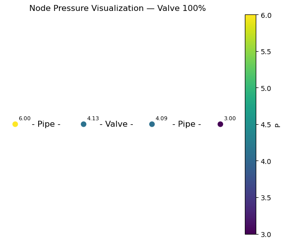
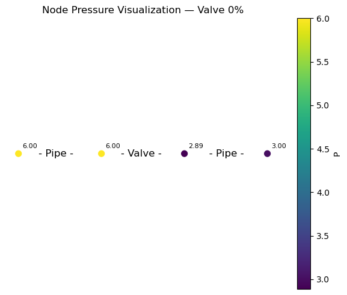

Tutorial 55: Compare Calculations
The Tutorial demonstrates how to execute calculations for the same model in adjusted valve states and view the individual results.
Imports
SIR 3S Toolkit
Regular Import/Init
[2]:
SIR3S_SIRGRAF_DIR = r"C:\3S\SIR 3S\SirGraf-90-15-00-24_Quebec-Upd2" #change to local path
[3]:
from sir3stoolkit.core import wrapper
[4]:
wrapper
[4]:
<module 'sir3stoolkit.core.wrapper' from 'C:\\Users\\aUsername\\3S\\sir3stoolkit\\src\\sir3stoolkit\\core\\wrapper.py'>
[5]:
wrapper.Initialize_Toolkit(SIR3S_SIRGRAF_DIR)
Additional Import/Init for Dataframes class
[6]:
from sir3stoolkit.mantle.dataframes import SIR3S_Model_Dataframes
[7]:
s3s = SIR3S_Model_Dataframes()
Initialization complete
Additional
[8]:
import matplotlib.pyplot as plt
Open Model
For the tutorial we have a simple hydraulic setup. A node with 4 t/h net outflow simulates some consumption. It is supplied by two pipes. The one from the left has a boundary pressure of 6 bar and a valve, we will control, the one from the right has a boundary pressure of 3 bar and no valve.
[9]:
s3s.OpenModel(dbName=r"Toolkit_Tutorial55_Model.db3",
providerType=s3s.ProviderTypes.SQLite,
Mid="M-1-0-1",
saveCurrentlyOpenModel=False,
namedInstance="",
userID="",
password="")
Model is open for further operation
Valves:
‘bz.Indphi’: -1: geschlossen, 0: offen, 1: Tabellenverweis, 2: variabel
‘bz.Phio’: Stellung offen [%]
‘bz.Phig’: Stellung geschlossen [%]
‘bz.Phisoll’: Stellung variabel [%]
‘bz.Fkphi1’,
‘bz.Tiv’,
‘bz.IndPhiKonst’,
‘bz.IndphiKlartext’
Get Tk
[10]:
valve = s3s.GetTksofElementType(s3s.ObjectTypes.Valve)[0]
1. Scenario: Valve open (100%)
[11]:
s3s.SetValue(Tk=valve, propertyName="bz.Indphi", Value="0")
Value is set
[12]:
s3s.ExecCalculation(True)
Model Calculation is complete
[13]:
df_nodes_1 = s3s.generate_element_dataframe(s3s.ObjectTypes.Node)
[2026-03-18 13:51:20,968] INFO in sir3stoolkit.mantle.dataframes: [generate_element_dataframe] Generating df for element type: ObjectTypes.Node ...
[2026-03-18 13:51:20,970] DEBUG in sir3stoolkit.mantle.dataframes: [generate_element_dataframe] Generating df_model_data for element type: ObjectTypes.Node ...
[2026-03-18 13:51:21,044] INFO in sir3stoolkit.mantle.dataframes: [model_data] Generating model_data dataframe for element type: ObjectTypes.Node
[2026-03-18 13:51:21,044] INFO in sir3stoolkit.mantle.dataframes: [model_data] Retrieved 4 element(s) of element type ObjectTypes.Node.
[2026-03-18 13:51:21,061] INFO in sir3stoolkit.mantle.dataframes: [Resolving model_data Properties] No properties given → using ALL model_data properties for ObjectTypes.Node.
[2026-03-18 13:51:21,061] INFO in sir3stoolkit.mantle.dataframes: [Resolving model_data Properties] Using 37 model_data properties.
[2026-03-18 13:51:21,061] INFO in sir3stoolkit.mantle.dataframes: [model_data] Retrieving model_data properties ['Name', 'Ktyp', 'Zkor', 'QmEin', 'Lfakt', 'Fkpzon', 'Fkfstf', 'Fkutmp', 'Fkfqps', 'Fkcont', 'Fk2lknot', 'Beschreibung', 'Idreferenz', 'Iplanung', 'Kvr', 'Qakt', 'Xkor', 'Ykor', 'NodeNamePosition', 'ShowNodeName', 'KvrKlartext', 'NumberOfVERB', 'HasBlockConnection', 'Tk', 'Pk', 'InVariant', 'GeometriesDiffer', 'SymbolFactor', 'bz.Drakonz', 'bz.Fk', 'bz.Fkpvar', 'bz.Fkqvar', 'bz.Fklfkt', 'bz.PhEin', 'bz.Tm', 'bz.Te', 'bz.PhMin'], geometry...
[2026-03-18 13:51:21,482] WARNING in sir3stoolkit.mantle.dataframes: [model_data] Spatial Reference Identifier (SRID) not defined in model. DataFrame cannot be transformed to GeoDataFrame but geometry column can be created independently of SRID. Returning regular DataFrame with a geometry column.
[2026-03-18 13:51:21,482] INFO in sir3stoolkit.mantle.dataframes: [model_data] Done. Shape: (4, 39)
[2026-03-18 13:51:21,493] DEBUG in sir3stoolkit.mantle.dataframes: [generate_element_dataframe] Generating df_results for element type: ObjectTypes.Node; at timestamp: 2026-03-18 10:16:50.000 +01:00 ...
[2026-03-18 13:51:21,493] INFO in sir3stoolkit.mantle.dataframes: [results] Generating results dataframe for element type: ObjectTypes.Node
[2026-03-18 13:51:21,511] INFO in sir3stoolkit.mantle.dataframes: [Resolving Timestamps] Only static timestamp 2026-03-18 10:16:50.000 +01:00 is used
[2026-03-18 13:51:21,511] INFO in sir3stoolkit.mantle.dataframes: [Resolving Timestamps] 1 valid timestamp(s) will be used.
[2026-03-18 13:51:21,519] INFO in sir3stoolkit.mantle.dataframes: [Resolving tks] Retrieved 4 element(s) of element type ObjectTypes.Node.
[2026-03-18 13:51:21,522] INFO in sir3stoolkit.mantle.dataframes: [results] Using 73 result properties.
[2026-03-18 13:51:21,527] INFO in sir3stoolkit.mantle.dataframes: [results] Retrieving result values...
[2026-03-18 13:51:21,539] WARNING in sir3stoolkit.mantle.dataframes: [results] Non-numeric value for 'ESQUELLSP' at '2026-03-18 10:16:50.000 +01:00':
[2026-03-18 13:51:21,555] WARNING in sir3stoolkit.mantle.dataframes: [results] Non-numeric value for 'FITT_SUBTYPE' at '2026-03-18 10:16:50.000 +01:00': [2026-03-18 13:51:21,557] WARNING in sir3stoolkit.mantle.dataframes: [results] Non-numeric value for 'FITT_VBTYPE1' at '2026-03-18 10:16:50.000 +01:00': [2026-03-18 13:51:21,557] WARNING in sir3stoolkit.mantle.dataframes: [results] Non-numeric value for 'FITT_VBTYPE2' at '2026-03-18 10:16:50.000 +01:00': [2026-03-18 13:51:21,559] WARNING in sir3stoolkit.mantle.dataframes: [results] Non-numeric value for 'FITT_VBTYPE3' at '2026-03-18 10:16:50.000 +01:00': [2026-03-18 13:51:21,561] WARNING in sir3stoolkit.mantle.dataframes: [results] Non-numeric value for 'FSTF_NAME' at '2026-03-18 10:16:50.000 +01:00': Standard
[2026-03-18 13:51:21,565] WARNING in sir3stoolkit.mantle.dataframes: [results] Non-numeric value for 'LFKT' at '2026-03-18 10:16:50.000 +01:00': [2026-03-18 13:51:21,576] WARNING in sir3stoolkit.mantle.dataframes: [results] Non-numeric value for 'PVAR' at '2026-03-18 10:16:50.000 +01:00': [2026-03-18 13:51:21,577] WARNING in sir3stoolkit.mantle.dataframes: [results] Non-numeric value for 'QVAR' at '2026-03-18 10:16:50.000 +01:00': [2026-03-18 13:51:21,581] WARNING in sir3stoolkit.mantle.dataframes: [results] Non-numeric value for 'ESQUELLSP' at '2026-03-18 10:16:50.000 +01:00':
[2026-03-18 13:51:21,581] WARNING in sir3stoolkit.mantle.dataframes: [results] Non-numeric value for 'FITT_SUBTYPE' at '2026-03-18 10:16:50.000 +01:00': [2026-03-18 13:51:21,581] WARNING in sir3stoolkit.mantle.dataframes: [results] Non-numeric value for 'FITT_VBTYPE1' at '2026-03-18 10:16:50.000 +01:00': [2026-03-18 13:51:21,581] WARNING in sir3stoolkit.mantle.dataframes: [results] Non-numeric value for 'FITT_VBTYPE2' at '2026-03-18 10:16:50.000 +01:00': [2026-03-18 13:51:21,584] WARNING in sir3stoolkit.mantle.dataframes: [results] Non-numeric value for 'FITT_VBTYPE3' at '2026-03-18 10:16:50.000 +01:00': [2026-03-18 13:51:21,584] WARNING in sir3stoolkit.mantle.dataframes: [results] Non-numeric value for 'FSTF_NAME' at '2026-03-18 10:16:50.000 +01:00': Standard
[2026-03-18 13:51:21,588] WARNING in sir3stoolkit.mantle.dataframes: [results] Non-numeric value for 'LFKT' at '2026-03-18 10:16:50.000 +01:00': [2026-03-18 13:51:21,590] WARNING in sir3stoolkit.mantle.dataframes: [results] Non-numeric value for 'PVAR' at '2026-03-18 10:16:50.000 +01:00': [2026-03-18 13:51:21,591] WARNING in sir3stoolkit.mantle.dataframes: [results] Non-numeric value for 'QVAR' at '2026-03-18 10:16:50.000 +01:00': [2026-03-18 13:51:21,594] WARNING in sir3stoolkit.mantle.dataframes: [results] Non-numeric value for 'ESQUELLSP' at '2026-03-18 10:16:50.000 +01:00':
[2026-03-18 13:51:21,595] WARNING in sir3stoolkit.mantle.dataframes: [results] Non-numeric value for 'FITT_SUBTYPE' at '2026-03-18 10:16:50.000 +01:00': [2026-03-18 13:51:21,595] WARNING in sir3stoolkit.mantle.dataframes: [results] Non-numeric value for 'FITT_VBTYPE1' at '2026-03-18 10:16:50.000 +01:00': [2026-03-18 13:51:21,596] WARNING in sir3stoolkit.mantle.dataframes: [results] Non-numeric value for 'FITT_VBTYPE2' at '2026-03-18 10:16:50.000 +01:00': [2026-03-18 13:51:21,598] WARNING in sir3stoolkit.mantle.dataframes: [results] Non-numeric value for 'FITT_VBTYPE3' at '2026-03-18 10:16:50.000 +01:00': [2026-03-18 13:51:21,599] WARNING in sir3stoolkit.mantle.dataframes: [results] Non-numeric value for 'FSTF_NAME' at '2026-03-18 10:16:50.000 +01:00': Standard
[2026-03-18 13:51:21,600] WARNING in sir3stoolkit.mantle.dataframes: [results] Non-numeric value for 'LFKT' at '2026-03-18 10:16:50.000 +01:00': [2026-03-18 13:51:21,601] WARNING in sir3stoolkit.mantle.dataframes: [results] Non-numeric value for 'PVAR' at '2026-03-18 10:16:50.000 +01:00': [2026-03-18 13:51:21,603] WARNING in sir3stoolkit.mantle.dataframes: [results] Non-numeric value for 'QVAR' at '2026-03-18 10:16:50.000 +01:00': [2026-03-18 13:51:21,606] WARNING in sir3stoolkit.mantle.dataframes: [results] Non-numeric value for 'ESQUELLSP' at '2026-03-18 10:16:50.000 +01:00':
[2026-03-18 13:51:21,608] WARNING in sir3stoolkit.mantle.dataframes: [results] Non-numeric value for 'FITT_SUBTYPE' at '2026-03-18 10:16:50.000 +01:00': [2026-03-18 13:51:21,608] WARNING in sir3stoolkit.mantle.dataframes: [results] Non-numeric value for 'FITT_VBTYPE1' at '2026-03-18 10:16:50.000 +01:00': [2026-03-18 13:51:21,610] WARNING in sir3stoolkit.mantle.dataframes: [results] Non-numeric value for 'FITT_VBTYPE2' at '2026-03-18 10:16:50.000 +01:00': [2026-03-18 13:51:21,611] WARNING in sir3stoolkit.mantle.dataframes: [results] Non-numeric value for 'FITT_VBTYPE3' at '2026-03-18 10:16:50.000 +01:00': [2026-03-18 13:51:21,611] WARNING in sir3stoolkit.mantle.dataframes: [results] Non-numeric value for 'FSTF_NAME' at '2026-03-18 10:16:50.000 +01:00': Standard
[2026-03-18 13:51:21,613] WARNING in sir3stoolkit.mantle.dataframes: [results] Non-numeric value for 'LFKT' at '2026-03-18 10:16:50.000 +01:00': [2026-03-18 13:51:21,615] WARNING in sir3stoolkit.mantle.dataframes: [results] Non-numeric value for 'PVAR' at '2026-03-18 10:16:50.000 +01:00': [2026-03-18 13:51:21,617] WARNING in sir3stoolkit.mantle.dataframes: [results] Non-numeric value for 'QVAR' at '2026-03-18 10:16:50.000 +01:00': [2026-03-18 13:51:21,625] INFO in sir3stoolkit.mantle.dataframes: [results] 76 fully NaN columns dropped.
[2026-03-18 13:51:21,632] INFO in sir3stoolkit.mantle.dataframes: [results] Done. Shape: (1, 216)
[2026-03-18 13:51:21,632] DEBUG in sir3stoolkit.mantle.dataframes: [generate_element_dataframe] Merging df_model_data with df_results for element type: ObjectTypes.Node ...
[14]:
df_nodes_1
[14]:
| tk | Name | Ktyp | Zkor | QmEin | Lfakt | Fkpzon | Fkfstf | Fkutmp | Fkfqps | Fkcont | Fk2lknot | Beschreibung | Idreferenz | Iplanung | Kvr | Qakt | Xkor | Ykor | NodeNamePosition | ShowNodeName | KvrKlartext | NumberOfVERB | HasBlockConnection | Tk | Pk | InVariant | GeometriesDiffer | SymbolFactor | bz.Drakonz | bz.Fk | bz.Fkpvar | bz.Fkqvar | bz.Fklfkt | bz.PhEin | bz.Tm | bz.Te | bz.PhMin | geometry | BCIND | BCIND_CALC | BCIND_FLOW | BCIND_MODEL | BCIND_SOURCE | BCIND_TYPE | CP | DP | DPH | DYNVISKO | ESQUELLSP | FITT_ANGLE | FITT_BASTYPE | FITT_DP1 | FITT_DP2 | FITT_DP3 | FITT_STATE | FITT_SUBTYPE | FITT_VBTYPE1 | FITT_VBTYPE2 | FITT_VBTYPE3 | FITT_ZETA1 | FITT_ZETA2 | FITT_ZETA3 | FSTF_NAME | H | HMAX_INST | HMIN_INST | IAKTIV | LFAKTAKT | LFKT | M | P | PDAMPF | PH | PHMINMAXDIF | PH_EIN | PH_MIN | PMAX_INST | PMIN_INST | PVAR | Q2 | QM | QMABS | QVAR | RHO | T | TE | TMAX_INST | TMIN_INST | TTR | VOLD | WALTER | ZHKNR | |
|---|---|---|---|---|---|---|---|---|---|---|---|---|---|---|---|---|---|---|---|---|---|---|---|---|---|---|---|---|---|---|---|---|---|---|---|---|---|---|---|---|---|---|---|---|---|---|---|---|---|---|---|---|---|---|---|---|---|---|---|---|---|---|---|---|---|---|---|---|---|---|---|---|---|---|---|---|---|---|---|---|---|---|---|---|---|---|---|---|---|---|---|---|---|
| 0 | 4627226928120134070 | NODE02 | QKON | 0 | 0 | 1 | -1 | 5035918757120503777 | 4966523102239983321 | -1 | 4744960050823542042 | -1 | Upstream of valve | 2 | 1 | 1 | 0 | 40 | 0 | 1 | False | Vorlauf | 0 | False | 4627226928120134070 | 4627226928120134070 | False | False | 1 | 0 | 4627226928120134070 | -1 | -1 | -1 | 0 | 0 | 0 | 0 | POINT Z (40 0 0) | 17.0 | 0.0 | 0.0 | 16.0 | 0.0 | 1.0 | 4.2074 | -3.333333e+32 | -3.333333e+32 | 0.001729 | NaN | -3.333333e+32 | -333333333.0 | -3.333333e+32 | -3.333333e+32 | -3.333333e+32 | -333333333.0 | NaN | NaN | NaN | NaN | -3.333333e+32 | -3.333333e+32 | -3.333333e+32 | NaN | 3.127404 | 3.127404 | 3.127404 | 0.0 | 1.0 | NaN | 0.000000 | 4.127404 | 0.0066 | 3.127404 | 0.0 | 3.127404 | 0.0 | 4.127404 | 4.127404 | NaN | -3.333333e+32 | 0.00000 | 0.00000 | NaN | 1000.5 | 0.0 | 0.0 | 0.0 | 0.0 | 0.000479 | 0.0 | -3.333333e+32 | 0.0 |
| 1 | 4853856122080314724 | NODE03 | QKON | 0 | -4 | 1 | -1 | 5035918757120503777 | 4966523102239983321 | -1 | 4744960050823542042 | -1 | Downstream of valve | 3 | 1 | 1 | -4 | 80 | 0 | 1 | False | Vorlauf | 0 | False | 4853856122080314724 | 4853856122080314724 | False | False | 1 | 0 | 4853856122080314724 | -1 | -1 | -1 | 0 | 0 | 0 | 0 | POINT Z (80 0 0) | 21.0 | 0.0 | 4.0 | 16.0 | 0.0 | 1.0 | 4.2074 | -3.333333e+32 | -3.333333e+32 | 0.001729 | NaN | -3.333333e+32 | -333333333.0 | -3.333333e+32 | -3.333333e+32 | -3.333333e+32 | -333333333.0 | NaN | NaN | NaN | NaN | -3.333333e+32 | -3.333333e+32 | -3.333333e+32 | NaN | 3.093694 | 3.093694 | 3.093694 | 0.0 | 1.0 | NaN | -1.111111 | 4.093695 | 0.0066 | 3.093694 | 0.0 | 3.093694 | 0.0 | 4.093695 | 4.093695 | NaN | -3.333333e+32 | -4.00000 | 4.00000 | NaN | 1000.5 | 0.0 | 0.0 | 0.0 | 0.0 | 0.000479 | 0.0 | -3.333333e+32 | 0.0 |
| 2 | 5631143277892559364 | NODE04 | PKON | 0 | -10 | 1 | -1 | 5035918757120503777 | 4966523102239983321 | -1 | 4744960050823542042 | -1 | Template Element for single Node Creation | 3S5612430692880892331 | 1 | 1 | 0 | 120 | 0 | 1 | False | Vorlauf | 0 | False | 5631143277892559364 | 5631143277892559364 | False | False | 1 | 0 | 5631143277892559364 | -1 | -1 | -1 | 2 | 0 | 0 | 0 | POINT Z (120 0 0) | 20.0 | 0.0 | 4.0 | 16.0 | 0.0 | 0.0 | 4.2074 | -3.333333e+32 | -3.333333e+32 | 0.001729 | NaN | -3.333333e+32 | -333333333.0 | -3.333333e+32 | -3.333333e+32 | -3.333333e+32 | -333333333.0 | NaN | NaN | NaN | NaN | -3.333333e+32 | -3.333333e+32 | -3.333333e+32 | NaN | 2.000000 | 2.000000 | 2.000000 | 0.0 | 1.0 | NaN | -3.559523 | 3.000000 | 0.0066 | 2.000000 | 0.0 | 2.000000 | 0.0 | 3.000000 | 3.000000 | NaN | -3.333333e+32 | -12.81428 | 12.81428 | NaN | 1000.5 | 0.0 | 0.0 | 0.0 | 0.0 | 0.001106 | 0.0 | -3.333333e+32 | 0.0 |
| 3 | 5698868843196465579 | NODE01 | PKON | 0 | 0 | 1 | -1 | 5035918757120503777 | 4966523102239983321 | -1 | 4744960050823542042 | -1 | Upstream of valve | 1 | 1 | 1 | 0 | 0 | 0 | 1 | False | Vorlauf | 0 | False | 5698868843196465579 | 5698868843196465579 | False | False | 1 | 0 | 5698868843196465579 | -1 | -1 | -1 | 5 | 0 | 0 | 0 | POINT Z (0 0 0) | 24.0 | 0.0 | 8.0 | 16.0 | 0.0 | 0.0 | 4.2074 | -3.333333e+32 | -3.333333e+32 | 0.001729 | NaN | -3.333333e+32 | -333333333.0 | -3.333333e+32 | -3.333333e+32 | -3.333333e+32 | -333333333.0 | NaN | NaN | NaN | NaN | -3.333333e+32 | -3.333333e+32 | -3.333333e+32 | NaN | 5.000000 | 5.000000 | 5.000000 | 0.0 | 1.0 | NaN | 4.670634 | 6.000000 | 0.0066 | 5.000000 | 0.0 | 5.000000 | 0.0 | 6.000000 | 6.000000 | NaN | -3.333333e+32 | 16.81428 | 16.81428 | NaN | 1000.5 | 0.0 | 0.0 | 0.0 | 0.0 | 0.000000 | 0.0 | -3.333333e+32 | 0.0 |
2. Scenario: Valve closed (0%)
[15]:
s3s.SetValue(Tk=valve, propertyName="bz.Indphi", Value="-1")
Value is set
[16]:
s3s.ExecCalculation(True)
Model Calculation is complete
[17]:
df_nodes_2 = s3s.generate_element_dataframe(s3s.ObjectTypes.Node)
[2026-03-18 13:51:25,597] INFO in sir3stoolkit.mantle.dataframes: [generate_element_dataframe] Generating df for element type: ObjectTypes.Node ...
[2026-03-18 13:51:25,597] DEBUG in sir3stoolkit.mantle.dataframes: [generate_element_dataframe] Generating df_model_data for element type: ObjectTypes.Node ...
[2026-03-18 13:51:25,605] INFO in sir3stoolkit.mantle.dataframes: [model_data] Generating model_data dataframe for element type: ObjectTypes.Node
[2026-03-18 13:51:25,607] INFO in sir3stoolkit.mantle.dataframes: [model_data] Retrieved 4 element(s) of element type ObjectTypes.Node.
[2026-03-18 13:51:25,608] INFO in sir3stoolkit.mantle.dataframes: [Resolving model_data Properties] No properties given → using ALL model_data properties for ObjectTypes.Node.
[2026-03-18 13:51:25,610] INFO in sir3stoolkit.mantle.dataframes: [Resolving model_data Properties] Using 37 model_data properties.
[2026-03-18 13:51:25,610] INFO in sir3stoolkit.mantle.dataframes: [model_data] Retrieving model_data properties ['Name', 'Ktyp', 'Zkor', 'QmEin', 'Lfakt', 'Fkpzon', 'Fkfstf', 'Fkutmp', 'Fkfqps', 'Fkcont', 'Fk2lknot', 'Beschreibung', 'Idreferenz', 'Iplanung', 'Kvr', 'Qakt', 'Xkor', 'Ykor', 'NodeNamePosition', 'ShowNodeName', 'KvrKlartext', 'NumberOfVERB', 'HasBlockConnection', 'Tk', 'Pk', 'InVariant', 'GeometriesDiffer', 'SymbolFactor', 'bz.Drakonz', 'bz.Fk', 'bz.Fkpvar', 'bz.Fkqvar', 'bz.Fklfkt', 'bz.PhEin', 'bz.Tm', 'bz.Te', 'bz.PhMin'], geometry...
[2026-03-18 13:51:25,661] WARNING in sir3stoolkit.mantle.dataframes: [model_data] Spatial Reference Identifier (SRID) not defined in model. DataFrame cannot be transformed to GeoDataFrame but geometry column can be created independently of SRID. Returning regular DataFrame with a geometry column.
[2026-03-18 13:51:25,661] INFO in sir3stoolkit.mantle.dataframes: [model_data] Done. Shape: (4, 39)
[2026-03-18 13:51:25,674] DEBUG in sir3stoolkit.mantle.dataframes: [generate_element_dataframe] Generating df_results for element type: ObjectTypes.Node; at timestamp: 2026-03-18 10:16:50.000 +01:00 ...
[2026-03-18 13:51:25,674] INFO in sir3stoolkit.mantle.dataframes: [results] Generating results dataframe for element type: ObjectTypes.Node
[2026-03-18 13:51:25,685] INFO in sir3stoolkit.mantle.dataframes: [Resolving Timestamps] Only static timestamp 2026-03-18 10:16:50.000 +01:00 is used
[2026-03-18 13:51:25,688] INFO in sir3stoolkit.mantle.dataframes: [Resolving Timestamps] 1 valid timestamp(s) will be used.
[2026-03-18 13:51:25,689] INFO in sir3stoolkit.mantle.dataframes: [Resolving tks] Retrieved 4 element(s) of element type ObjectTypes.Node.
[2026-03-18 13:51:25,691] INFO in sir3stoolkit.mantle.dataframes: [results] Using 73 result properties.
[2026-03-18 13:51:25,695] INFO in sir3stoolkit.mantle.dataframes: [results] Retrieving result values...
[2026-03-18 13:51:25,696] WARNING in sir3stoolkit.mantle.dataframes: [results] Non-numeric value for 'ESQUELLSP' at '2026-03-18 10:16:50.000 +01:00':
[2026-03-18 13:51:25,698] WARNING in sir3stoolkit.mantle.dataframes: [results] Non-numeric value for 'FITT_SUBTYPE' at '2026-03-18 10:16:50.000 +01:00': [2026-03-18 13:51:25,698] WARNING in sir3stoolkit.mantle.dataframes: [results] Non-numeric value for 'FITT_VBTYPE1' at '2026-03-18 10:16:50.000 +01:00': [2026-03-18 13:51:25,700] WARNING in sir3stoolkit.mantle.dataframes: [results] Non-numeric value for 'FITT_VBTYPE2' at '2026-03-18 10:16:50.000 +01:00': [2026-03-18 13:51:25,700] WARNING in sir3stoolkit.mantle.dataframes: [results] Non-numeric value for 'FITT_VBTYPE3' at '2026-03-18 10:16:50.000 +01:00': [2026-03-18 13:51:25,702] WARNING in sir3stoolkit.mantle.dataframes: [results] Non-numeric value for 'FSTF_NAME' at '2026-03-18 10:16:50.000 +01:00': Standard
[2026-03-18 13:51:25,704] WARNING in sir3stoolkit.mantle.dataframes: [results] Non-numeric value for 'LFKT' at '2026-03-18 10:16:50.000 +01:00': [2026-03-18 13:51:25,705] WARNING in sir3stoolkit.mantle.dataframes: [results] Non-numeric value for 'PVAR' at '2026-03-18 10:16:50.000 +01:00': [2026-03-18 13:51:25,705] WARNING in sir3stoolkit.mantle.dataframes: [results] Non-numeric value for 'QVAR' at '2026-03-18 10:16:50.000 +01:00': [2026-03-18 13:51:25,710] WARNING in sir3stoolkit.mantle.dataframes: [results] Non-numeric value for 'ESQUELLSP' at '2026-03-18 10:16:50.000 +01:00':
[2026-03-18 13:51:25,711] WARNING in sir3stoolkit.mantle.dataframes: [results] Non-numeric value for 'FITT_SUBTYPE' at '2026-03-18 10:16:50.000 +01:00': [2026-03-18 13:51:25,711] WARNING in sir3stoolkit.mantle.dataframes: [results] Non-numeric value for 'FITT_VBTYPE1' at '2026-03-18 10:16:50.000 +01:00': [2026-03-18 13:51:25,711] WARNING in sir3stoolkit.mantle.dataframes: [results] Non-numeric value for 'FITT_VBTYPE2' at '2026-03-18 10:16:50.000 +01:00': [2026-03-18 13:51:25,713] WARNING in sir3stoolkit.mantle.dataframes: [results] Non-numeric value for 'FITT_VBTYPE3' at '2026-03-18 10:16:50.000 +01:00': [2026-03-18 13:51:25,715] WARNING in sir3stoolkit.mantle.dataframes: [results] Non-numeric value for 'FSTF_NAME' at '2026-03-18 10:16:50.000 +01:00': Standard
[2026-03-18 13:51:25,716] WARNING in sir3stoolkit.mantle.dataframes: [results] Non-numeric value for 'LFKT' at '2026-03-18 10:16:50.000 +01:00': [2026-03-18 13:51:25,718] WARNING in sir3stoolkit.mantle.dataframes: [results] Non-numeric value for 'PVAR' at '2026-03-18 10:16:50.000 +01:00': [2026-03-18 13:51:25,719] WARNING in sir3stoolkit.mantle.dataframes: [results] Non-numeric value for 'QVAR' at '2026-03-18 10:16:50.000 +01:00': [2026-03-18 13:51:25,720] WARNING in sir3stoolkit.mantle.dataframes: [results] Non-numeric value for 'ESQUELLSP' at '2026-03-18 10:16:50.000 +01:00':
[2026-03-18 13:51:25,723] WARNING in sir3stoolkit.mantle.dataframes: [results] Non-numeric value for 'FITT_SUBTYPE' at '2026-03-18 10:16:50.000 +01:00': [2026-03-18 13:51:25,723] WARNING in sir3stoolkit.mantle.dataframes: [results] Non-numeric value for 'FITT_VBTYPE1' at '2026-03-18 10:16:50.000 +01:00': [2026-03-18 13:51:25,723] WARNING in sir3stoolkit.mantle.dataframes: [results] Non-numeric value for 'FITT_VBTYPE2' at '2026-03-18 10:16:50.000 +01:00': [2026-03-18 13:51:25,725] WARNING in sir3stoolkit.mantle.dataframes: [results] Non-numeric value for 'FITT_VBTYPE3' at '2026-03-18 10:16:50.000 +01:00': [2026-03-18 13:51:25,727] WARNING in sir3stoolkit.mantle.dataframes: [results] Non-numeric value for 'FSTF_NAME' at '2026-03-18 10:16:50.000 +01:00': Standard
[2026-03-18 13:51:25,729] WARNING in sir3stoolkit.mantle.dataframes: [results] Non-numeric value for 'LFKT' at '2026-03-18 10:16:50.000 +01:00': [2026-03-18 13:51:25,730] WARNING in sir3stoolkit.mantle.dataframes: [results] Non-numeric value for 'PVAR' at '2026-03-18 10:16:50.000 +01:00': [2026-03-18 13:51:25,731] WARNING in sir3stoolkit.mantle.dataframes: [results] Non-numeric value for 'QVAR' at '2026-03-18 10:16:50.000 +01:00': [2026-03-18 13:51:25,733] WARNING in sir3stoolkit.mantle.dataframes: [results] Non-numeric value for 'ESQUELLSP' at '2026-03-18 10:16:50.000 +01:00':
[2026-03-18 13:51:25,736] WARNING in sir3stoolkit.mantle.dataframes: [results] Non-numeric value for 'FITT_SUBTYPE' at '2026-03-18 10:16:50.000 +01:00': [2026-03-18 13:51:25,736] WARNING in sir3stoolkit.mantle.dataframes: [results] Non-numeric value for 'FITT_VBTYPE1' at '2026-03-18 10:16:50.000 +01:00': [2026-03-18 13:51:25,737] WARNING in sir3stoolkit.mantle.dataframes: [results] Non-numeric value for 'FITT_VBTYPE2' at '2026-03-18 10:16:50.000 +01:00': [2026-03-18 13:51:25,738] WARNING in sir3stoolkit.mantle.dataframes: [results] Non-numeric value for 'FITT_VBTYPE3' at '2026-03-18 10:16:50.000 +01:00': [2026-03-18 13:51:25,738] WARNING in sir3stoolkit.mantle.dataframes: [results] Non-numeric value for 'FSTF_NAME' at '2026-03-18 10:16:50.000 +01:00': Standard
[2026-03-18 13:51:25,742] WARNING in sir3stoolkit.mantle.dataframes: [results] Non-numeric value for 'LFKT' at '2026-03-18 10:16:50.000 +01:00': [2026-03-18 13:51:25,743] WARNING in sir3stoolkit.mantle.dataframes: [results] Non-numeric value for 'PVAR' at '2026-03-18 10:16:50.000 +01:00': [2026-03-18 13:51:25,743] WARNING in sir3stoolkit.mantle.dataframes: [results] Non-numeric value for 'QVAR' at '2026-03-18 10:16:50.000 +01:00': [2026-03-18 13:51:25,748] INFO in sir3stoolkit.mantle.dataframes: [results] 76 fully NaN columns dropped.
[2026-03-18 13:51:25,760] INFO in sir3stoolkit.mantle.dataframes: [results] Done. Shape: (1, 216)
[2026-03-18 13:51:25,760] DEBUG in sir3stoolkit.mantle.dataframes: [generate_element_dataframe] Merging df_model_data with df_results for element type: ObjectTypes.Node ...
[18]:
df_nodes_2
[18]:
| tk | Name | Ktyp | Zkor | QmEin | Lfakt | Fkpzon | Fkfstf | Fkutmp | Fkfqps | Fkcont | Fk2lknot | Beschreibung | Idreferenz | Iplanung | Kvr | Qakt | Xkor | Ykor | NodeNamePosition | ShowNodeName | KvrKlartext | NumberOfVERB | HasBlockConnection | Tk | Pk | InVariant | GeometriesDiffer | SymbolFactor | bz.Drakonz | bz.Fk | bz.Fkpvar | bz.Fkqvar | bz.Fklfkt | bz.PhEin | bz.Tm | bz.Te | bz.PhMin | geometry | BCIND | BCIND_CALC | BCIND_FLOW | BCIND_MODEL | BCIND_SOURCE | BCIND_TYPE | CP | DP | DPH | DYNVISKO | ESQUELLSP | FITT_ANGLE | FITT_BASTYPE | FITT_DP1 | FITT_DP2 | FITT_DP3 | FITT_STATE | FITT_SUBTYPE | FITT_VBTYPE1 | FITT_VBTYPE2 | FITT_VBTYPE3 | FITT_ZETA1 | FITT_ZETA2 | FITT_ZETA3 | FSTF_NAME | H | HMAX_INST | HMIN_INST | IAKTIV | LFAKTAKT | LFKT | M | P | PDAMPF | PH | PHMINMAXDIF | PH_EIN | PH_MIN | PMAX_INST | PMIN_INST | PVAR | Q2 | QM | QMABS | QVAR | RHO | T | TE | TMAX_INST | TMIN_INST | TTR | VOLD | WALTER | ZHKNR | |
|---|---|---|---|---|---|---|---|---|---|---|---|---|---|---|---|---|---|---|---|---|---|---|---|---|---|---|---|---|---|---|---|---|---|---|---|---|---|---|---|---|---|---|---|---|---|---|---|---|---|---|---|---|---|---|---|---|---|---|---|---|---|---|---|---|---|---|---|---|---|---|---|---|---|---|---|---|---|---|---|---|---|---|---|---|---|---|---|---|---|---|---|---|---|
| 0 | 4627226928120134070 | NODE02 | QKON | 0 | 0 | 1 | -1 | 5035918757120503777 | 4966523102239983321 | -1 | 4744960050823542042 | -1 | Upstream of valve | 2 | 1 | 1 | 0 | 40 | 0 | 1 | False | Vorlauf | 0 | False | 4627226928120134070 | 4627226928120134070 | False | False | 1 | 0 | 4627226928120134070 | -1 | -1 | -1 | 0 | 0 | 0 | 0 | POINT Z (40 0 0) | 17.0 | 0.0 | 0.0 | 16.0 | 0.0 | 1.0 | 4.2074 | -3.333333e+32 | -3.333333e+32 | 0.001729 | NaN | -3.333333e+32 | -333333333.0 | -3.333333e+32 | -3.333333e+32 | -3.333333e+32 | -333333333.0 | NaN | NaN | NaN | NaN | -3.333333e+32 | -3.333333e+32 | -3.333333e+32 | NaN | 4.999999 | 4.999999 | 4.999999 | 0.0 | 1.0 | NaN | 0.000000 | 5.999999 | 0.0066 | 4.999999 | 0.0 | 4.999999 | 0.0 | 5.999999 | 5.999999 | NaN | -3.333333e+32 | 0.000000 | 0.000000 | NaN | 1000.5 | 0.0 | 0.0 | 0.0 | 0.0 | 10.000000 | 0.0 | -3.333333e+32 | 0.0 |
| 1 | 4853856122080314724 | NODE03 | QKON | 0 | -4 | 1 | -1 | 5035918757120503777 | 4966523102239983321 | -1 | 4744960050823542042 | -1 | Downstream of valve | 3 | 1 | 1 | -4 | 80 | 0 | 1 | False | Vorlauf | 0 | False | 4853856122080314724 | 4853856122080314724 | False | False | 1 | 0 | 4853856122080314724 | -1 | -1 | -1 | 0 | 0 | 0 | 0 | POINT Z (80 0 0) | 21.0 | 0.0 | 4.0 | 16.0 | 0.0 | 1.0 | 4.2074 | -3.333333e+32 | -3.333333e+32 | 0.001729 | NaN | -3.333333e+32 | -333333333.0 | -3.333333e+32 | -3.333333e+32 | -3.333333e+32 | -333333333.0 | NaN | NaN | NaN | NaN | -3.333333e+32 | -3.333333e+32 | -3.333333e+32 | NaN | 1.888348 | 1.888348 | 1.888348 | 0.0 | 1.0 | NaN | -1.111111 | 2.888347 | 0.0066 | 1.888348 | 0.0 | 1.888348 | 0.0 | 2.888347 | 2.888347 | NaN | -3.333333e+32 | -4.000000 | 4.000000 | NaN | 1000.5 | 0.0 | 0.0 | 0.0 | 0.0 | 0.003818 | 0.0 | -3.333333e+32 | 1.0 |
| 2 | 5631143277892559364 | NODE04 | PKON | 0 | -10 | 1 | -1 | 5035918757120503777 | 4966523102239983321 | -1 | 4744960050823542042 | -1 | Template Element for single Node Creation | 3S5612430692880892331 | 1 | 1 | 0 | 120 | 0 | 1 | False | Vorlauf | 0 | False | 5631143277892559364 | 5631143277892559364 | False | False | 1 | 0 | 5631143277892559364 | -1 | -1 | -1 | 2 | 0 | 0 | 0 | POINT Z (120 0 0) | 24.0 | 0.0 | 8.0 | 16.0 | 0.0 | 0.0 | 4.2074 | -3.333333e+32 | -3.333333e+32 | 0.001729 | NaN | -3.333333e+32 | -333333333.0 | -3.333333e+32 | -3.333333e+32 | -3.333333e+32 | -333333333.0 | NaN | NaN | NaN | NaN | -3.333333e+32 | -3.333333e+32 | -3.333333e+32 | NaN | 2.000000 | 2.000000 | 2.000000 | 0.0 | 1.0 | NaN | 1.110910 | 3.000000 | 0.0066 | 2.000000 | 0.0 | 2.000000 | 0.0 | 3.000000 | 3.000000 | NaN | -3.333333e+32 | 3.999278 | 3.999278 | NaN | 1000.5 | 0.0 | 0.0 | 0.0 | 0.0 | 0.000000 | 0.0 | -3.333333e+32 | 1.0 |
| 3 | 5698868843196465579 | NODE01 | PKON | 0 | 0 | 1 | -1 | 5035918757120503777 | 4966523102239983321 | -1 | 4744960050823542042 | -1 | Upstream of valve | 1 | 1 | 1 | 0 | 0 | 0 | 1 | False | Vorlauf | 0 | False | 5698868843196465579 | 5698868843196465579 | False | False | 1 | 0 | 5698868843196465579 | -1 | -1 | -1 | 5 | 0 | 0 | 0 | POINT Z (0 0 0) | 24.0 | 0.0 | 8.0 | 16.0 | 0.0 | 0.0 | 4.2074 | -3.333333e+32 | -3.333333e+32 | 0.001729 | NaN | -3.333333e+32 | -333333333.0 | -3.333333e+32 | -3.333333e+32 | -3.333333e+32 | -333333333.0 | NaN | NaN | NaN | NaN | -3.333333e+32 | -3.333333e+32 | -3.333333e+32 | NaN | 5.000000 | 5.000000 | 5.000000 | 0.0 | 1.0 | NaN | 0.000201 | 6.000000 | 0.0066 | 5.000000 | 0.0 | 5.000000 | 0.0 | 6.000000 | 6.000000 | NaN | -3.333333e+32 | 0.000722 | 0.000722 | NaN | 1000.5 | 0.0 | 0.0 | 0.0 | 0.0 | 0.000000 | 0.0 | -3.333333e+32 | 0.0 |
3. Scenario: Valve variable (55%)
[19]:
s3s.SetValue(Tk=valve, propertyName="bz.Indphi", Value="2")
Value is set
[20]:
s3s.ExecCalculation(True)
Model Calculation is complete
[21]:
df_nodes_3 = s3s.generate_element_dataframe(s3s.ObjectTypes.Node)
[2026-03-18 13:51:29,715] INFO in sir3stoolkit.mantle.dataframes: [generate_element_dataframe] Generating df for element type: ObjectTypes.Node ...
[2026-03-18 13:51:29,716] DEBUG in sir3stoolkit.mantle.dataframes: [generate_element_dataframe] Generating df_model_data for element type: ObjectTypes.Node ...
[2026-03-18 13:51:29,722] INFO in sir3stoolkit.mantle.dataframes: [model_data] Generating model_data dataframe for element type: ObjectTypes.Node
[2026-03-18 13:51:29,723] INFO in sir3stoolkit.mantle.dataframes: [model_data] Retrieved 4 element(s) of element type ObjectTypes.Node.
[2026-03-18 13:51:29,726] INFO in sir3stoolkit.mantle.dataframes: [Resolving model_data Properties] No properties given → using ALL model_data properties for ObjectTypes.Node.
[2026-03-18 13:51:29,726] INFO in sir3stoolkit.mantle.dataframes: [Resolving model_data Properties] Using 37 model_data properties.
[2026-03-18 13:51:29,726] INFO in sir3stoolkit.mantle.dataframes: [model_data] Retrieving model_data properties ['Name', 'Ktyp', 'Zkor', 'QmEin', 'Lfakt', 'Fkpzon', 'Fkfstf', 'Fkutmp', 'Fkfqps', 'Fkcont', 'Fk2lknot', 'Beschreibung', 'Idreferenz', 'Iplanung', 'Kvr', 'Qakt', 'Xkor', 'Ykor', 'NodeNamePosition', 'ShowNodeName', 'KvrKlartext', 'NumberOfVERB', 'HasBlockConnection', 'Tk', 'Pk', 'InVariant', 'GeometriesDiffer', 'SymbolFactor', 'bz.Drakonz', 'bz.Fk', 'bz.Fkpvar', 'bz.Fkqvar', 'bz.Fklfkt', 'bz.PhEin', 'bz.Tm', 'bz.Te', 'bz.PhMin'], geometry...
[2026-03-18 13:51:29,780] WARNING in sir3stoolkit.mantle.dataframes: [model_data] Spatial Reference Identifier (SRID) not defined in model. DataFrame cannot be transformed to GeoDataFrame but geometry column can be created independently of SRID. Returning regular DataFrame with a geometry column.
[2026-03-18 13:51:29,781] INFO in sir3stoolkit.mantle.dataframes: [model_data] Done. Shape: (4, 39)
[2026-03-18 13:51:29,793] DEBUG in sir3stoolkit.mantle.dataframes: [generate_element_dataframe] Generating df_results for element type: ObjectTypes.Node; at timestamp: 2026-03-18 10:16:50.000 +01:00 ...
[2026-03-18 13:51:29,795] INFO in sir3stoolkit.mantle.dataframes: [results] Generating results dataframe for element type: ObjectTypes.Node
[2026-03-18 13:51:29,808] INFO in sir3stoolkit.mantle.dataframes: [Resolving Timestamps] Only static timestamp 2026-03-18 10:16:50.000 +01:00 is used
[2026-03-18 13:51:29,811] INFO in sir3stoolkit.mantle.dataframes: [Resolving Timestamps] 1 valid timestamp(s) will be used.
[2026-03-18 13:51:29,811] INFO in sir3stoolkit.mantle.dataframes: [Resolving tks] Retrieved 4 element(s) of element type ObjectTypes.Node.
[2026-03-18 13:51:29,814] INFO in sir3stoolkit.mantle.dataframes: [results] Using 73 result properties.
[2026-03-18 13:51:29,815] INFO in sir3stoolkit.mantle.dataframes: [results] Retrieving result values...
[2026-03-18 13:51:29,819] WARNING in sir3stoolkit.mantle.dataframes: [results] Non-numeric value for 'ESQUELLSP' at '2026-03-18 10:16:50.000 +01:00':
[2026-03-18 13:51:29,821] WARNING in sir3stoolkit.mantle.dataframes: [results] Non-numeric value for 'FITT_SUBTYPE' at '2026-03-18 10:16:50.000 +01:00': [2026-03-18 13:51:29,822] WARNING in sir3stoolkit.mantle.dataframes: [results] Non-numeric value for 'FITT_VBTYPE1' at '2026-03-18 10:16:50.000 +01:00': [2026-03-18 13:51:29,824] WARNING in sir3stoolkit.mantle.dataframes: [results] Non-numeric value for 'FITT_VBTYPE2' at '2026-03-18 10:16:50.000 +01:00': [2026-03-18 13:51:29,826] WARNING in sir3stoolkit.mantle.dataframes: [results] Non-numeric value for 'FITT_VBTYPE3' at '2026-03-18 10:16:50.000 +01:00': [2026-03-18 13:51:29,827] WARNING in sir3stoolkit.mantle.dataframes: [results] Non-numeric value for 'FSTF_NAME' at '2026-03-18 10:16:50.000 +01:00': Standard
[2026-03-18 13:51:29,829] WARNING in sir3stoolkit.mantle.dataframes: [results] Non-numeric value for 'LFKT' at '2026-03-18 10:16:50.000 +01:00': [2026-03-18 13:51:29,829] WARNING in sir3stoolkit.mantle.dataframes: [results] Non-numeric value for 'PVAR' at '2026-03-18 10:16:50.000 +01:00': [2026-03-18 13:51:29,832] WARNING in sir3stoolkit.mantle.dataframes: [results] Non-numeric value for 'QVAR' at '2026-03-18 10:16:50.000 +01:00': [2026-03-18 13:51:29,835] WARNING in sir3stoolkit.mantle.dataframes: [results] Non-numeric value for 'ESQUELLSP' at '2026-03-18 10:16:50.000 +01:00':
[2026-03-18 13:51:29,836] WARNING in sir3stoolkit.mantle.dataframes: [results] Non-numeric value for 'FITT_SUBTYPE' at '2026-03-18 10:16:50.000 +01:00': [2026-03-18 13:51:29,838] WARNING in sir3stoolkit.mantle.dataframes: [results] Non-numeric value for 'FITT_VBTYPE1' at '2026-03-18 10:16:50.000 +01:00': [2026-03-18 13:51:29,839] WARNING in sir3stoolkit.mantle.dataframes: [results] Non-numeric value for 'FITT_VBTYPE2' at '2026-03-18 10:16:50.000 +01:00': [2026-03-18 13:51:29,840] WARNING in sir3stoolkit.mantle.dataframes: [results] Non-numeric value for 'FITT_VBTYPE3' at '2026-03-18 10:16:50.000 +01:00': [2026-03-18 13:51:29,841] WARNING in sir3stoolkit.mantle.dataframes: [results] Non-numeric value for 'FSTF_NAME' at '2026-03-18 10:16:50.000 +01:00': Standard
[2026-03-18 13:51:29,844] WARNING in sir3stoolkit.mantle.dataframes: [results] Non-numeric value for 'LFKT' at '2026-03-18 10:16:50.000 +01:00': [2026-03-18 13:51:29,846] WARNING in sir3stoolkit.mantle.dataframes: [results] Non-numeric value for 'PVAR' at '2026-03-18 10:16:50.000 +01:00': [2026-03-18 13:51:29,846] WARNING in sir3stoolkit.mantle.dataframes: [results] Non-numeric value for 'QVAR' at '2026-03-18 10:16:50.000 +01:00': [2026-03-18 13:51:29,849] WARNING in sir3stoolkit.mantle.dataframes: [results] Non-numeric value for 'ESQUELLSP' at '2026-03-18 10:16:50.000 +01:00':
[2026-03-18 13:51:29,849] WARNING in sir3stoolkit.mantle.dataframes: [results] Non-numeric value for 'FITT_SUBTYPE' at '2026-03-18 10:16:50.000 +01:00': [2026-03-18 13:51:29,851] WARNING in sir3stoolkit.mantle.dataframes: [results] Non-numeric value for 'FITT_VBTYPE1' at '2026-03-18 10:16:50.000 +01:00': [2026-03-18 13:51:29,853] WARNING in sir3stoolkit.mantle.dataframes: [results] Non-numeric value for 'FITT_VBTYPE2' at '2026-03-18 10:16:50.000 +01:00': [2026-03-18 13:51:29,853] WARNING in sir3stoolkit.mantle.dataframes: [results] Non-numeric value for 'FITT_VBTYPE3' at '2026-03-18 10:16:50.000 +01:00': [2026-03-18 13:51:29,855] WARNING in sir3stoolkit.mantle.dataframes: [results] Non-numeric value for 'FSTF_NAME' at '2026-03-18 10:16:50.000 +01:00': Standard
[2026-03-18 13:51:29,857] WARNING in sir3stoolkit.mantle.dataframes: [results] Non-numeric value for 'LFKT' at '2026-03-18 10:16:50.000 +01:00': [2026-03-18 13:51:29,860] WARNING in sir3stoolkit.mantle.dataframes: [results] Non-numeric value for 'PVAR' at '2026-03-18 10:16:50.000 +01:00': [2026-03-18 13:51:29,861] WARNING in sir3stoolkit.mantle.dataframes: [results] Non-numeric value for 'QVAR' at '2026-03-18 10:16:50.000 +01:00': [2026-03-18 13:51:29,863] WARNING in sir3stoolkit.mantle.dataframes: [results] Non-numeric value for 'ESQUELLSP' at '2026-03-18 10:16:50.000 +01:00':
[2026-03-18 13:51:29,865] WARNING in sir3stoolkit.mantle.dataframes: [results] Non-numeric value for 'FITT_SUBTYPE' at '2026-03-18 10:16:50.000 +01:00': [2026-03-18 13:51:29,866] WARNING in sir3stoolkit.mantle.dataframes: [results] Non-numeric value for 'FITT_VBTYPE1' at '2026-03-18 10:16:50.000 +01:00': [2026-03-18 13:51:29,867] WARNING in sir3stoolkit.mantle.dataframes: [results] Non-numeric value for 'FITT_VBTYPE2' at '2026-03-18 10:16:50.000 +01:00': [2026-03-18 13:51:29,867] WARNING in sir3stoolkit.mantle.dataframes: [results] Non-numeric value for 'FITT_VBTYPE3' at '2026-03-18 10:16:50.000 +01:00': [2026-03-18 13:51:29,869] WARNING in sir3stoolkit.mantle.dataframes: [results] Non-numeric value for 'FSTF_NAME' at '2026-03-18 10:16:50.000 +01:00': Standard
[2026-03-18 13:51:29,871] WARNING in sir3stoolkit.mantle.dataframes: [results] Non-numeric value for 'LFKT' at '2026-03-18 10:16:50.000 +01:00': [2026-03-18 13:51:29,874] WARNING in sir3stoolkit.mantle.dataframes: [results] Non-numeric value for 'PVAR' at '2026-03-18 10:16:50.000 +01:00': [2026-03-18 13:51:29,875] WARNING in sir3stoolkit.mantle.dataframes: [results] Non-numeric value for 'QVAR' at '2026-03-18 10:16:50.000 +01:00': [2026-03-18 13:51:29,880] INFO in sir3stoolkit.mantle.dataframes: [results] 76 fully NaN columns dropped.
[2026-03-18 13:51:29,893] INFO in sir3stoolkit.mantle.dataframes: [results] Done. Shape: (1, 216)
[2026-03-18 13:51:29,893] DEBUG in sir3stoolkit.mantle.dataframes: [generate_element_dataframe] Merging df_model_data with df_results for element type: ObjectTypes.Node ...
[22]:
df_nodes_3
[22]:
| tk | Name | Ktyp | Zkor | QmEin | Lfakt | Fkpzon | Fkfstf | Fkutmp | Fkfqps | Fkcont | Fk2lknot | Beschreibung | Idreferenz | Iplanung | Kvr | Qakt | Xkor | Ykor | NodeNamePosition | ShowNodeName | KvrKlartext | NumberOfVERB | HasBlockConnection | Tk | Pk | InVariant | GeometriesDiffer | SymbolFactor | bz.Drakonz | bz.Fk | bz.Fkpvar | bz.Fkqvar | bz.Fklfkt | bz.PhEin | bz.Tm | bz.Te | bz.PhMin | geometry | BCIND | BCIND_CALC | BCIND_FLOW | BCIND_MODEL | BCIND_SOURCE | BCIND_TYPE | CP | DP | DPH | DYNVISKO | ESQUELLSP | FITT_ANGLE | FITT_BASTYPE | FITT_DP1 | FITT_DP2 | FITT_DP3 | FITT_STATE | FITT_SUBTYPE | FITT_VBTYPE1 | FITT_VBTYPE2 | FITT_VBTYPE3 | FITT_ZETA1 | FITT_ZETA2 | FITT_ZETA3 | FSTF_NAME | H | HMAX_INST | HMIN_INST | IAKTIV | LFAKTAKT | LFKT | M | P | PDAMPF | PH | PHMINMAXDIF | PH_EIN | PH_MIN | PMAX_INST | PMIN_INST | PVAR | Q2 | QM | QMABS | QVAR | RHO | T | TE | TMAX_INST | TMIN_INST | TTR | VOLD | WALTER | ZHKNR | |
|---|---|---|---|---|---|---|---|---|---|---|---|---|---|---|---|---|---|---|---|---|---|---|---|---|---|---|---|---|---|---|---|---|---|---|---|---|---|---|---|---|---|---|---|---|---|---|---|---|---|---|---|---|---|---|---|---|---|---|---|---|---|---|---|---|---|---|---|---|---|---|---|---|---|---|---|---|---|---|---|---|---|---|---|---|---|---|---|---|---|---|---|---|---|
| 0 | 4627226928120134070 | NODE02 | QKON | 0 | 0 | 1 | -1 | 5035918757120503777 | 4966523102239983321 | -1 | 4744960050823542042 | -1 | Upstream of valve | 2 | 1 | 1 | 0 | 40 | 0 | 1 | False | Vorlauf | 0 | False | 4627226928120134070 | 4627226928120134070 | False | False | 1 | 0 | 4627226928120134070 | -1 | -1 | -1 | 0 | 0 | 0 | 0 | POINT Z (40 0 0) | 17.0 | 0.0 | 0.0 | 16.0 | 0.0 | 1.0 | 4.2074 | -3.333333e+32 | -3.333333e+32 | 0.001729 | NaN | -3.333333e+32 | -333333333.0 | -3.333333e+32 | -3.333333e+32 | -3.333333e+32 | -333333333.0 | NaN | NaN | NaN | NaN | -3.333333e+32 | -3.333333e+32 | -3.333333e+32 | NaN | 3.239119 | 3.239119 | 3.239119 | 0.0 | 1.0 | NaN | 0.000000 | 4.239119 | 0.0066 | 3.239119 | 0.0 | 3.239119 | 0.0 | 4.239119 | 4.239119 | NaN | -3.333333e+32 | 0.00000 | 0.00000 | NaN | 1000.5 | 0.0 | 0.0 | 0.0 | 0.0 | 0.000494 | 0.0 | -3.333333e+32 | 0.0 |
| 1 | 4853856122080314724 | NODE03 | QKON | 0 | -4 | 1 | -1 | 5035918757120503777 | 4966523102239983321 | -1 | 4744960050823542042 | -1 | Downstream of valve | 3 | 1 | 1 | -4 | 80 | 0 | 1 | False | Vorlauf | 0 | False | 4853856122080314724 | 4853856122080314724 | False | False | 1 | 0 | 4853856122080314724 | -1 | -1 | -1 | 0 | 0 | 0 | 0 | POINT Z (80 0 0) | 21.0 | 0.0 | 4.0 | 16.0 | 0.0 | 1.0 | 4.2074 | -3.333333e+32 | -3.333333e+32 | 0.001729 | NaN | -3.333333e+32 | -333333333.0 | -3.333333e+32 | -3.333333e+32 | -3.333333e+32 | -333333333.0 | NaN | NaN | NaN | NaN | -3.333333e+32 | -3.333333e+32 | -3.333333e+32 | NaN | 3.008708 | 3.008708 | 3.008708 | 0.0 | 1.0 | NaN | -1.111111 | 4.008708 | 0.0066 | 3.008708 | 0.0 | 3.008708 | 0.0 | 4.008708 | 4.008708 | NaN | -3.333333e+32 | -4.00000 | 4.00000 | NaN | 1000.5 | 0.0 | 0.0 | 0.0 | 0.0 | 0.000494 | 0.0 | -3.333333e+32 | 0.0 |
| 2 | 5631143277892559364 | NODE04 | PKON | 0 | -10 | 1 | -1 | 5035918757120503777 | 4966523102239983321 | -1 | 4744960050823542042 | -1 | Template Element for single Node Creation | 3S5612430692880892331 | 1 | 1 | 0 | 120 | 0 | 1 | False | Vorlauf | 0 | False | 5631143277892559364 | 5631143277892559364 | False | False | 1 | 0 | 5631143277892559364 | -1 | -1 | -1 | 2 | 0 | 0 | 0 | POINT Z (120 0 0) | 20.0 | 0.0 | 4.0 | 16.0 | 0.0 | 0.0 | 4.2074 | -3.333333e+32 | -3.333333e+32 | 0.001729 | NaN | -3.333333e+32 | -333333333.0 | -3.333333e+32 | -3.333333e+32 | -3.333333e+32 | -333333333.0 | NaN | NaN | NaN | NaN | -3.333333e+32 | -3.333333e+32 | -3.333333e+32 | NaN | 2.000000 | 2.000000 | 2.000000 | 0.0 | 1.0 | NaN | -3.416775 | 3.000000 | 0.0066 | 2.000000 | 0.0 | 2.000000 | 0.0 | 3.000000 | 3.000000 | NaN | -3.333333e+32 | -12.30039 | 12.30039 | NaN | 1000.5 | 0.0 | 0.0 | 0.0 | 0.0 | 0.001148 | 0.0 | -3.333333e+32 | 0.0 |
| 3 | 5698868843196465579 | NODE01 | PKON | 0 | 0 | 1 | -1 | 5035918757120503777 | 4966523102239983321 | -1 | 4744960050823542042 | -1 | Upstream of valve | 1 | 1 | 1 | 0 | 0 | 0 | 1 | False | Vorlauf | 0 | False | 5698868843196465579 | 5698868843196465579 | False | False | 1 | 0 | 5698868843196465579 | -1 | -1 | -1 | 5 | 0 | 0 | 0 | POINT Z (0 0 0) | 24.0 | 0.0 | 8.0 | 16.0 | 0.0 | 0.0 | 4.2074 | -3.333333e+32 | -3.333333e+32 | 0.001729 | NaN | -3.333333e+32 | -333333333.0 | -3.333333e+32 | -3.333333e+32 | -3.333333e+32 | -333333333.0 | NaN | NaN | NaN | NaN | -3.333333e+32 | -3.333333e+32 | -3.333333e+32 | NaN | 5.000000 | 5.000000 | 5.000000 | 0.0 | 1.0 | NaN | 4.527887 | 6.000000 | 0.0066 | 5.000000 | 0.0 | 5.000000 | 0.0 | 6.000000 | 6.000000 | NaN | -3.333333e+32 | 16.30039 | 16.30039 | NaN | 1000.5 | 0.0 | 0.0 | 0.0 | 0.0 | 0.000000 | 0.0 | -3.333333e+32 | 0.0 |
Pressure Comparison
[23]:
def plot_geometry_pressure(df, valve_percentage, geom_col="geometry", p_col="P"):
"""
Scatter plot of geometry points colored by P.
Adds numeric pressure labels and ONE centered text box.
"""
xs = [pt.x for pt in df[geom_col]]
ys = [pt.y for pt in df[geom_col]]
P = df[p_col]
plt.figure(figsize=(6, 5))
sc = plt.scatter(xs, ys, c=P, cmap="viridis", s=50)
for x, y, p in zip(xs, ys, P):
plt.annotate(
f"{p:.2f}",
xy=(x, y),
xytext=(5, 5), # Offset: 5 px right, 5 px up
textcoords="offset points",
fontsize=8,
ha="left",
va="bottom"
)
# colorbar = legend
cbar = plt.colorbar(sc)
cbar.set_label(p_col)
plt.xlabel("x")
plt.ylabel("y")
plt.axis('off')
plt.title(f"Node Pressure Visualization — Valve {valve_percentage}%")
# very rudimentary just for tutorial
plt.text(
0.5, 0.5,
f"- Pipe - - Valve - - Pipe - ",
transform=plt.gca().transAxes, # use axes coordinates
fontsize=12,
color="black",
ha="center",
va="center",
)
plt.tight_layout()
plt.show()
[24]:
plot_geometry_pressure(df=df_nodes_1, valve_percentage="100")

Note that due to the simplicitiy of the model we consider, we will actually have some net outflow on the right most node.
[25]:
plot_geometry_pressure(df=df_nodes_2, valve_percentage="0")

Now the left and right part are completley decoupled as the valve is shut.
[26]:
plot_geometry_pressure(df=df_nodes_3, valve_percentage="55")

We can observe a large pressure drop across the valve than at 100 % opening.
[27]:
s3s.CloseModel(False)
[27]:
True